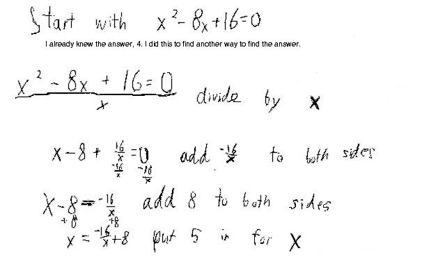

on the right side. I got 4 4/5. Put that back in for x and keep doing that
feedback.
I got the sequence 5, 4 4/5, 4 4/6, 4 4/7, 4 4/8, ...
The top number of the fraction is always 4, and the bottom number of the
fraction increases by 1 each time. Eventually the sequence will be very close to
4, which is the answer to the equation I had gotten before!